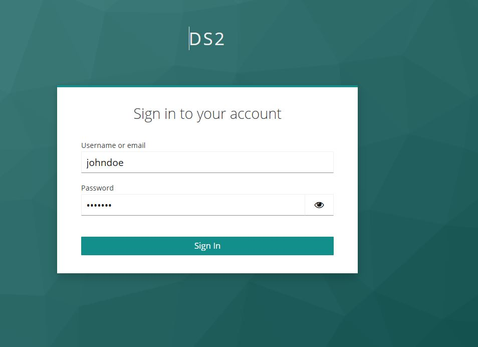

Portal
Powered by

| Project Links |
|---|
| Software GitHub Repository https://github.com/ds2-eu/portal |
| Progress GitHub Project https://github.com/orgs/ds2-eu/projects/11 |
General Description
To provide a user and developer friendly portal allowing dataspace participants to register and select DS2 modules which can then be packaged into a IDT environment subsequently deployed by participants enabling both In-Data Space and Inter-Data Space operations. As such it includes functionality for developers to include modules, users to find those modules, to trigger the packaging through links with the containerisation module, as well as supporting functionality for dataspace support, dataspace resources, registration and identity management, and administration. It also provides support for the Data Marketplace.
The portal will operate in the DS2 cloud hosted by i4RI. Parties interested in DS may register – this includes participants, dataspace governance/operators, DS2 module developers as well as, potentially, service intermediaries. Developers will provide modules to the portal marketplace which can be selected/purchased by participants. Selected modules will then be downloaded and installed by and at a participant IDT. All parties involved will be granted unique IDs including DS-Pair IDs where DS’s agree to cooperate. If manpower resources allow ,a subcomponent will also support user-developer and developer-developer interactions as well as additional static resources such as useful materials or links to IDSA etc. The portal will run on the DS2 platform as a central node but in itself will not be involved in any participant-participant process either at the control or data plane levels. It operates at Tier 1, so is not a “module” in-itself, even though it will be deployed and run on top of IDT like a module, so participants would not deploy it. However, conceptually it could be run locally. It could be run by any one as an additional service – for example dataspace operators. Its main interfaces are to the Containerisation module for module description and packaging, IDT for deployment, the Platform where it is both deployed and will interface to some system modules, and the Data Marketplace which uses it for base marketplace functions.
Architecture
The figure below represents the module fit into the DS-DS environment.
The figure below represents the actors, internal structure, primary sub-components, primary DS2 module interfaces, and primary other interfaces of the module.
Component Definition
This module has the following subcomponent and other functions:
-
Portal Front End: This is the initial web front end entry point seen by any user of the portal, regardless of participant type or if an external party (eg developer). If unregistered, it directs them to the Registration and Management component and if registered a login process follows. Dynamic menus then allow users to navigate to the elements they wish to see and have access for and as such there is an inferred link to all subcomponents with some form of UI. Of particular relevance is the Dashbutton which is a kind-of mini-Portal Front End embedded in all subcomponents and modules including the Portal itself.
-
Registration and Management: This allows the registration of any actor which wishes to take advantage or use DS2. This includes human actors such as user’s requiring IDT/modules and developers through to system actors such as dataspaces. This will be a customised version of ICE’s existing portal registration system. It’s primary link is to the DS2 Identity Manager.
-
Dash button: The Dashbutton is a DS2 library feature used by most modules and is a dynamic shortcut menu to things of most relevance to the user (eg mainly their installed modules). It allows users to quickly get awareness of their personal DS2 environment as well as control it. The Dashbutton dynamic is detailed within the IDT Module. The base functionality of the Dashbutton exists now but needs to be highly customised for the DS2 environment. It relies on embedded HTML vs an API and enables a holistic environment for DS2 in an easy way. It is detailed in the IDT module.
-
Resource Connect: This will have no deep functionality but allows the users to navigate to further web/document/video type resources both within DS2 and externally (eg IDSA). For example, to read more technical details, look up example dataspaces or any other material. This component is an “if-time-allows” option.
-
Developer Connect: This is intended to simplify casual chat-like interaction between users and developers or in fact any set of participants subscribed to DS2. For example, for support or to discuss new ideas. If included it will be based on existing third part components. This component is an “if-time-allows” option.
-
Module Marketplace: Listing, Cart, Purchase: DS2 modules need to be selected from a catalogue of all modules, purchased (which may be for 0 EUR), and licensed which then makes them available to be packaged into IDT. Except for the latter this is classic marketplace functionality and is mainly configuration of ICE’s existing marketplace module. Its primary links are to the Module uploader to populate its shopfront and once a module is ’purchased’ the License and Use Manager.
-
Module Uploader: Beneficiaries (or third parties) develop data-orientated DS2 modules which can be put on DS2 Marketplace. A main link is to the DS2 Identity Manager to give unique identities to the module uploaded. This subcomponent ensures all relevant information is provided and packaged in the right way. This includes software, module details (eg price, licenses, description, logo...), and accompanying knowledge (eg How To’s, Videos…). It ensures a module is K8s/Helm compliant so that it can be potentially packaged into IDT. It will be based on ICE Asset upload being customised for the DS2 environment and all modules must confirm to its needs.
-
Payment: Once agreed the product is paid for and both the portal and the developer compensated. An existing payment service (stripe) will be used and a cart-mediator service is used to link to that (strip link is not shown in architecture). This service will also be used by the Data Marketplace
-
License and Use Manager: Following potential purchase from the marketplace the asset is then licensed for use (fixed licenses, subscription etc – however developer determines) and a Payment is then due. Once licensed it becomes available for the Containerisation and Deployment grouping to either issue a new IDT or to upgrade and existing IDT. The components is based on existing ICE Marketplace technology upgraded for DS2. Other modules can also use the licensing system – eg the Data Marketplace (TBD). Note that on first use core modules such as containerisation will also be packaged
-
Administration: A UI for Portal (and Platform) administrator to use to configure other elements and functions of the portal based on access credentials.
-
Portal Identity Manager: Provides identities for actors (parties and modules) relevant to the Portal. All DS2 users must have a DS2 ID, as should Dataspaces, and Dataspace Pairs. The Portal Identity Manager will where necessary interface with the DS2 Identity Module (IDM) to validate participant IDs which will run on the DS2 Platform
-
DS2 Containerisation and API: This provides two basic services to the portal: A) Assisting and ensuring a developer uploads a containerisation compliant module. B) Once modules are selected and licensed, they can be packaged and deployed via this module to downloadable/upgradable IDTs
-
DS2 S/W Platform and API: This platform is available to all modules and is the cloud home of the Portal as well as the Portal hosting an administrative interface to configure it
-
DS2 Data Marketplace and API: The cloud base data marketplace may take advantage of some of the portal common administration function – user management, licensing, payment
-
DS2 IDT Broker: The licensed modules are packaged via DS2 Containerisation and deployed as a bespoke IDT to the participant
-
DS2 Portal Operator: This represents the administrator and operator of the system who use the Administration UI
-
Modules, s/w, details, knowledge: This represents the upload of the module and accompanying information to become an asset in the portal which can be later explored and purchased. The upload is to the Module Uploaders.
-
Developers: Technicians and business partners representing a developed module to be uploaded
-
User: Any participant of any data space, or future potential participant who wishes to explorer/download modules available
-
External Modules: Other modules which could be applicable to show on a users Dashbutton
Screenshots
To Be Done

Commercial Information
| Organisation (s) | License Nature | License |
|---|---|---|
| ICE | Open Source | Apache 2.0 |
Top Features
- Organisation Registration and Management: The Portal provides the functionality to register an organisation in DS2 and manage its profile
- User and Role Management: Create additional users and roles to the organisation
- Main DS2 Entry Point: The Portal is the UI main entry point to DS2
- DS2 Navigation: Allows seamless navigation between intermediary modules in the DS2 Cloud Platform
- Global and Local Portal: The Portal has two different views, the Global Portal running as an intermediary service in the DS2 Cloud Platform and the Local Portal which is meant for the IDT as the IDT Portal
- Dash Button: A web component to be integrated by all modules that provide the interface to the DS2 security and identity system and allows module navigation
- Developer Access: Generate API Key to use the Portal API for integration
- Portal Marketplace: The Portal includes a fully featured Marketplace, which could be considered a module on its own, with functionalities to publish and purchase modules, module search, feedback and ratings, flexible license models, secure payment integration, etc.
- GitHub Backend Storage: The Marketplace feature is backed by GitHub storage, meaning that modules and container images are stored in GitHub
- Containerisation Integration: The Module creation view of the Containerisation module is integrated into the Portal
How To Install
Even though the Portal (Global Portal) is a DS2 intermediary service, and users don't need to install it, it is packaged as a regular DS2 module and can be installed on top of the IDT, same as the Local Portal. The Marketplace is also installed as an additional module. In addition, the Dash Button is a web component that needs to be integrated in all DS2 module UIs. Details on how to integrate it are explained next.
Requirements
N/A
Software
N/A
Summary of installation steps
Portal
- Run a keycloak instance or use the ds2 one (recommended)
- Pull the docker images from the DS2 GitHub Container Registry
- Run the containers from the docker images: Portal API and Portal Frontend
Marketplace
Dash Button
-
Add script file path to index.html
-
Add the font-awesome library (starting from v0.0.16)
-
Configure according frontend framework ie. Angular ...
-
Place the web-component button tag at the top of the navigation bar
Detailed steps
Portal
- First, you need to start your own Keycloak instance or use the DS2 version. We recommend using the DS2-based Keycloak instance
- Instructions on using own Keycloak instance TBD
- To use the DS2 Keycloak instance, you just need to configure the URL https://keycloak.ds2.icelab.cloud when running the containers - see next step
-
Pull the docker images form the GitHub repository
You will need to log in the registry using docker login ghcr.io
-
Run the docker images
- The Portal API
docker run --name portal-api -d -p 3000:3000 -e IMAGE_GITHUB_REPONAME="test-avatar" -e DASHBUTTON_LINKS='{"local": [{"name": "IDT", "url": "idt.ds2", "icon": "fa-brands fa-uncharted"}, {"name": "Containerization", "url": "containerization.ds2", "icon": "fa-solid fa-server"}], "global": [{"name": "IDM", "url": "idm.ds2", "icon": "fa-solid fa-file-shield"}, {"name": "Catalog", "url": "catalog.ds2", "icon": "fa-solid fa-folder-tree"}, {"name": "Marketplace", "url": "https://marketplace.ds2.icelab.cloud", "icon": "fa-solid fa-cart-arrow-down"}, {"name": "Chat", "url": "chat.ds2", "icon": "fa-regular fa-comment-dots"}] }' -e KEYCLOAK_URL='https://keycloak.ds2.icelab.cloud' -e REALM_NAME=ds2 -e CLIENT_ID=portal-api -e CLIENT_SECRET=RT7FdTDKbSI6CsU8DKosHtnw5PHRIblM -e DASHBUTTON_MENU_LINKS='[{"name": "Marketplace", "icon": "fa-solid fa-cart-shopping", "url": "https://marketplace.ds2.icelab.cloud/"}, {"name": "Chat", "icon": "fa-regular fa-comment-dots", "url": "http://chat"}]' ghcr.io/ds2-eu/ds2charts/portal-api:1.2.0 - The Portal Frontend
docker run --name portal -d -p 4200:80 -e PORTAL_URL="https://portal.ds2.icelab.cloud" -e PORTAL_API="https://portal-api.ds2.icelab.cloud" -e DISABLE_APPLICATION_TAB=true -e REDIRECT_URL="https://portal.ds2.icelab.cloud/dashboard" -e CLIENT_ID=dashbtn -e REALM=ds2 -e SHOW_POST_LOGIN_TEXT=true -e APP_DISPLAY_NAME="Modules" -e OTHER_LINK_DISPLAY_NAME="Default Modules" -e KEYCLOAK_URL="https://keycloak.ds2.icelab.cloud" -e DEPLOYMENT_MODE=global -e SHOW_ONBOARDING_MESSAGE=true portal:1.2.6
- The Portal API
Marketplace
Dash Button
To install the dash-button web component, copy and paste it into your frontend application.
Note: Please refer to the npm package page to find the latest version, and replace
X.X.Xin the import script accordingly:<script type="module" src="https://unpkg.com/dash-button-web@X.X.X/dist/esm/web-compnont.js"></script>Note: Starting from v0.0.16, you need to add the FontAwesome stylesheet file to your application. If your application is already using this package, you can ignore this.
<link rel="stylesheet" href="https://cdnjs.cloudflare.com/ajax/libs/font-awesome/6.7.2/css/all.min.css" />
You can find the NPM package named dash-button-web.
If it is a framework, you will need to configure more options. Therefore, follow the Stencil.js documentation.
- Setup Keycloak Server Application
First, you need to start your own Keycloak instance or use the DS2 version. We recommend using the DS2-based Keycloak instance.
* Option 1 – Use DS2 Keycloak details
You can use predefined Keycloak credentials to configure DashButton. The required details are summarized below.
- Keyclaok URL: **https://keycloak.ds2.icelab.cloud**
- Realm: **ds2**
- Client ID: **dashbtn**
* Option 2 – Configure your own Keycloak client
If you use your own version, you need to configure the realm, client, and test users.
Make sure the client is set up with a **client ID** and that **client authentication is disabled**.
- Configure frontend application
Here, we are demonstrating how to configure the application on an Angular-based application and a basic HTML-based application. If you need to install React or Vue.js, follow the Stencil.js documentation.
First, you need to enable the custom component support feature in the Angular project. To do that, the following code block needs to be added to the src/app/app.module.ts file.
Once the above addition is completed, it is required to import the below module as follows.
Next, you need to put the script file path in the src/index.html file header section as follows.
<head>
<meta name="viewport" content="width=device-width, initial-scale=1">
<link rel="icon" type="image/x-icon" href="favicon.ico">
<script type='module' src='https://unpkg.com/dash-button-web@X.X.X/dist/esm/web-compnont.js'></script>
<link rel="stylesheet" href="https://cdnjs.cloudflare.com/ajax/libs/font-awesome/6.7.2/css/all.min.css" />
...
After that, you can pass configuration options as follows using the web component.
-
Configuration options
Attribute Description Type Default client-idKeycloak client IDstring`` keycloak-uriKeycloak server URIstring"http://localhost:8080"realmKeycloak realmstring`` redirect-uriApplication redirect URIstring`` show-post-login-textSuccessfully logged in shows a custom button messagebooleanfalseauth-methodAuthentication methodstringcheck-sso,(login-required)app-idApplication unique IDstring`` portal-urlPortal URLstring`` portal-api-urlPortal API URLstring`` show-unauthorized-modalShow unauthorized modalbooleanfalseother-link-typeAdd new links for the menustringlocal or globalapplication-display-nameMenu application display namestringApplicationsdisable-application-tabdisable application tabbooleanfalsemenu-view-typethe style of the menustringgrid/list -
Theme configuration options
Attribute Description Type Default primary-colorSet primary colourstring`` accent-colorSet secondary or accent colorstring`` AuthMethod Using the auth-method attribute updates the application's authentication workflow.
login-required: User is forced to the login screen if they are not logged in.check-sso: User is not forced to the login screen; instead, when the user clicks the login button, they are redirected to the login screen.
Now, you are almost done. In the final stage, you can place the web-component button tag at the top of the navigation bar using the following code block.
Note: Replace DashButton configuration with actual values.
To get the module link for the Dashbutton, use the portal-api-url attribute and provide the Portal backend API endpoint URL. For the DS2 platform, you can use https://portal-api.ds2.icelab.cloud as the Portal API URL..
<dash-button keycloak-uri="http://localhost:8080" realm="demo" client-id="testapp" portal-api-url="replace_url" auth-method="login-required" show-post-login-text="false"></dash-button>
Note: You need to create a new user. Please access the portal and create an account associated with your organization.
Additionally you can test some of the demo applications located in the Portal repository dash-button/demo-app/ folder (see additinal links)
How To Use
The next sections describe how to use the different components part of the Portal
Portal
In order to use the Portal, first navigate to the main entry page at https://portal.ds2.icelab.cloud/.
You need to first register your organisation to be able to log in. Click on Create an account and enter the required details.
First enter the name of the new organisation and click Next to check whether it already exists or not in the system.

Then enter all the details required for the organisation registration and click Register.
After that, organisation is registered.
User can now log in with newly created organisation and username. 
User will receive a verification email upon first login attempt
Once logged in there is a guided tour on the different options available that uses can follow.
The main Dashboard of the Portal shows the list of default central modules running in the DS2 Cloud Platform ie. IDM, Catalog, Marketplace and Chat at the moment. The list will evolve as new features are added to DS2.
In the left navigation bar users can access and edit the profile information.
The Dataspaces option which links to the IDM (see IDM documentation). So far this is a link but researching to embedd the functionality inside the Portal.
The Users option allows creating new users for this organisation. Click on Add new user and enter the details.
In addition, the Portal already includes the DashButton which is described in the DashButton section.
Marketplace
The Marketplace includes two main different views. The first one is the so called Marketplace for users to be able to purchase modules. The second one is the Product License Manager aimed at module developers to be able to publish their modules and monitor sales.
-
Marketplace
-
Product License Manager
Dash Button
To Be Done
Other Information
No other information at the moment for Portal
OpenAPI Specification
To Be Done
Additional Links
Video https://youtube.com/portal
Portal Repository https://github.com/ds2-eu/portal (Private Link for Project Members)